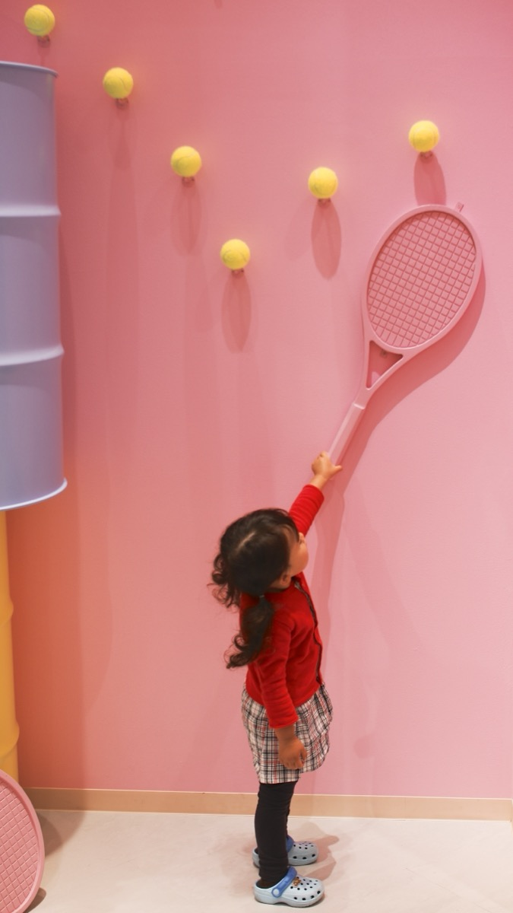

Step 1 — Shake hands with the handle
Pick up the racket as if you are shaking someone’s hand. The V between thumb and index finger sits on the top edge of the handle. This is enough for almost every learner shot.
Basics 1 of 6

Pick up the racket as if you are shaking someone’s hand. The V between thumb and index finger sits on the top edge of the handle. This is enough for almost every learner shot.

Do not squeeze. A tight fist makes late, short balls. Hold firm enough that the racket will not fly, loose enough that the wrist can still move.

Between shots, both hands on the racket in front of your body. Knees soft. When the ball comes to your forehand, let the non-hitting hand go. When it comes to the backhand, keep both hands.